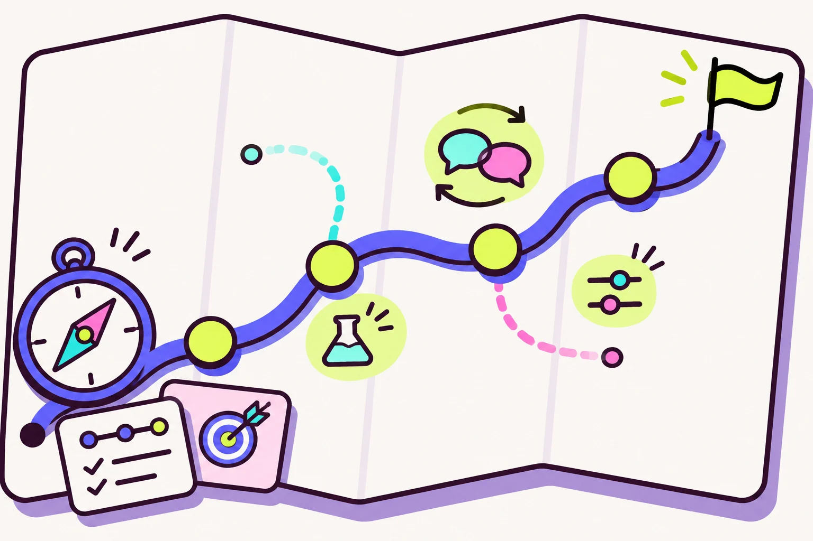
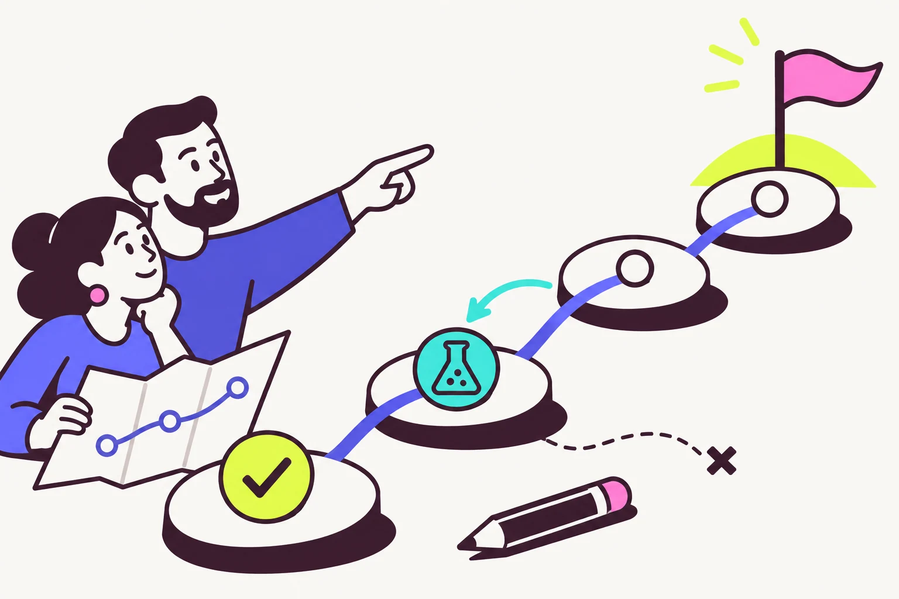
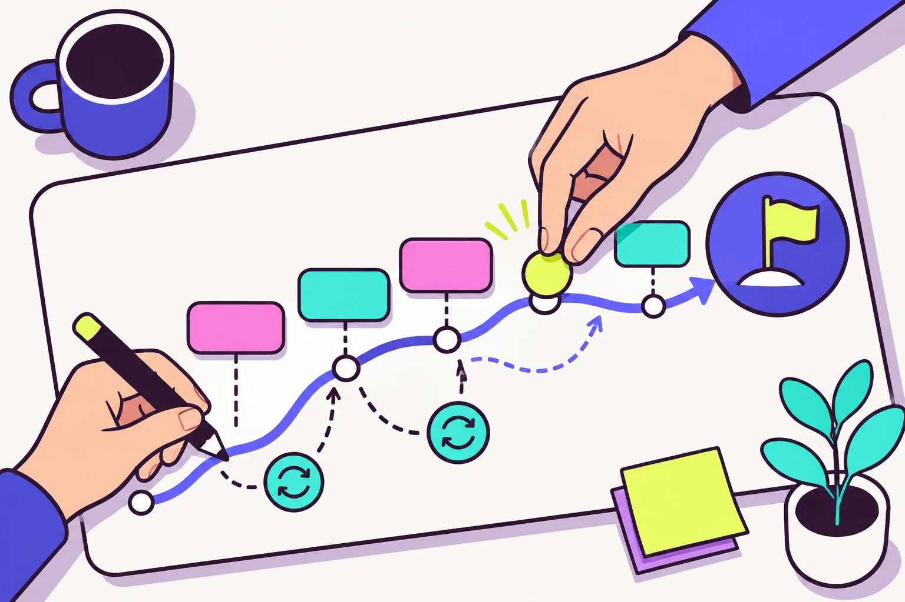

1. Карта маршрута
Показывает общую картину, этапы и ветки, которые можно отложить.
Открыть целиком ↗Выбор иллюстрации
На главной сейчас стоит схема этапов. Здесь три варианта иллюстрации для этого блока.

Показывает общую картину, этапы и ветки, которые можно отложить.
Открыть целиком ↗
Показывает движение небольшими пробами и возможность вернуться к решению.
Открыть целиком ↗
Показывает совместное обдумывание, участие и выбор следующего действия.
Открыть целиком ↗